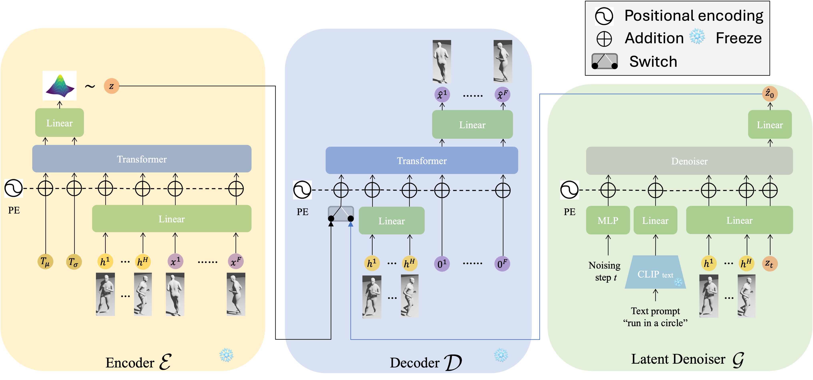
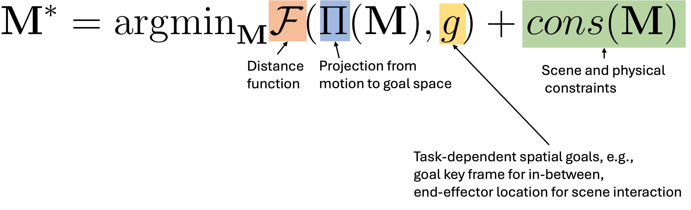
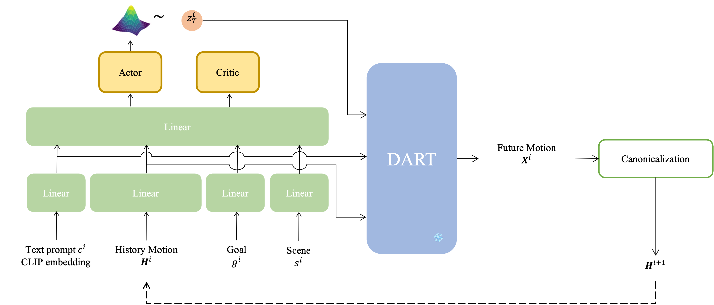

Overview
In this work, we present DART, a Diffusion-based Autoregressive motion model for Real-time Text-driven motion control. DART achieves high-quality and efficient ( > 300 frames per second on single RTX 4090 GPU) motion generation conditioned on online streams of text prompts. Furthermore, by integrating latent space optimization and reinforcement learning-based controls, DART enables various motion generation applications with spatial constraints and goals, including motion in-between, waypoint goal reaching, and human-scene interaction generation.
Method
DART

DART uses an architechture of autoregressive latent diffusion to learn a text-conditioned space of motion primitives. The encoder and decoder networks are frozen during the training of the denoiser network.
Illustration of online text-to-motion using DART:
An example rollout result:
Motion control in latent space
We formulate motion control as a minimization problem, aiming to identify motion sequences that are closest to the spatial objectives while adhering to regularization terms derived from scene and physical constraints. We explore two methods leveraging the latent motion space of DART to solve this problem: gradient descent-based optimization and reinforcement learning within the learned latent space.

Formulation of motion generation with spatial goals and constraints.

Illustration of the reinforcement-learning policy-based control.
Results
Text-conditioned temporal motion composition
Command-line text-driven interactive demo
Optimization-based control
Text-conditioned motion in-between
Integrating DART with latent space optimization-based control enables the generation of high-quality intermediate motions that smoothly transition between the keyframes conditioned on the text semantics. Our method outperforms the baseline DNO, particularly in terms of semantic alignment with the text prompts.
"A person paces in circles", duration 4 seconds
"A person dances", duration 4 seconds (initial frame not visualized to reduce occlusion)
"A person crawls", duration 4 seconds (initial frame not visualized to reduce occlusion)
"A person climbs down stairs", duration 2.25 seconds
"A person crawls", duration 4 seconds
Human-scene interaction
We present preliminary results of synthesizing human-scene interactions by inputting text prompts, scene SDF (signed distance field), and a goal pelvis joint location. The red sphere in the visualizations represents the given goal pelvis joint location.
Reinforcement learning-based control
Text-conditioned waypoint goal reaching
The waypoint reaching task requires the human agent to sequentially reach dynamically updated goals, each visualized as a yellow torus. A new goal waypoint is given to the human agent after the current waypoint has been successfully reached. Our method, combining DART with RL-based control, can generate 240 frames per second when tested on a single RTX 4090 GPU. Moreover, our method enables the selection of locomotion styles by conditioning the policy with various text prompts, a capability that extends beyond the scope of existing works.
Ours: "run"
Ours: "hop on left leg"
Citation
@inproceedings{Zhao:DART:2024,
title = {A Diffusion-Based Autoregressive Motion Model for Real-Time Text-Driven Motion Control},
author = {Zhao, Kaifeng and Li, Gen and Tang, Siyu},
year = {2024}
}